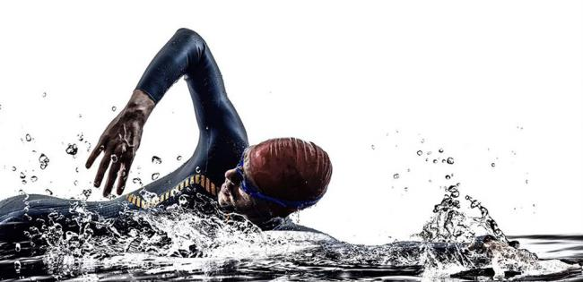

游泳
為了保持足夠體力應付之後的踏腳踏車和跑步項目，三項全能運動員在游泳時不會使用太猛烈的泳式，許多三項全能運動員利用經過改良的泳姿，以應付急流、湧浪等。
另外，三項全能游泳項目有機會在戶外水域進行，而不是室內泳池。所以，三項全能運動員在游泳階段必須注意水流方向而獲得優勢，緊隨其他比賽者以利用他們製造的水流。
三項全能運動員經常將使用「海豚踢」和潛水來逆著波浪前進，和在游泳結束階段身體衝浪來利用波浪的能量增加速度。並且，在戶外水域游泳需要舉頭尋找用作標記路線的地標或浮體。一個經過改良的泳姿方便三項全能運動員在水中看到標記，不會影響前進速度或浪費體力。